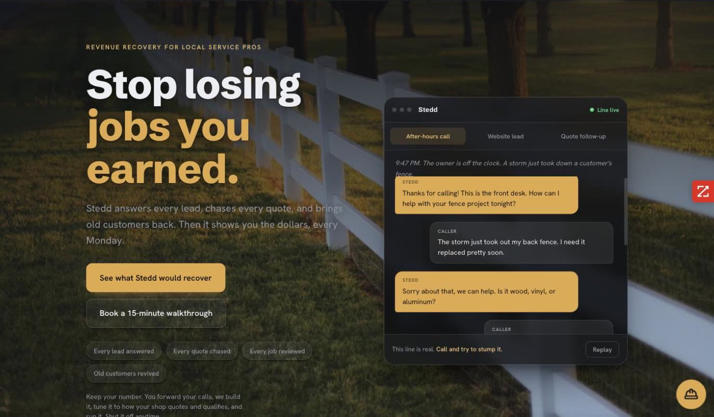
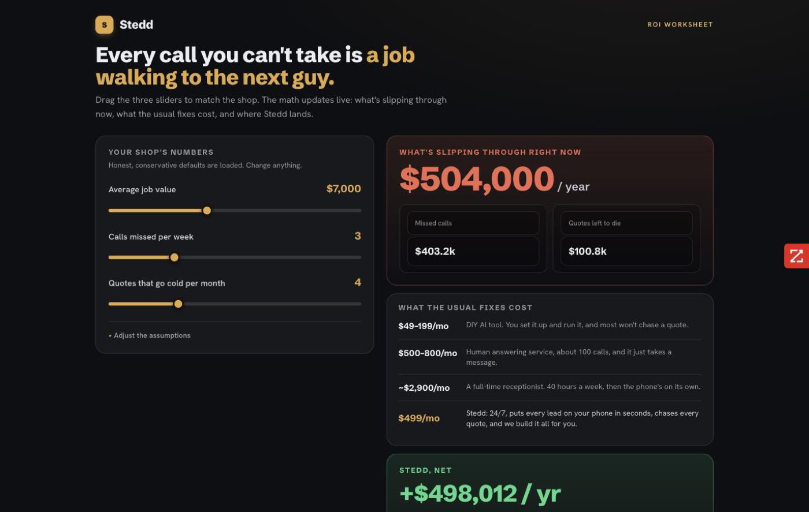

Stedd
I built Stedd for trades businesses because follow-up marketing is what I've done for a living, and I know how a contractor's day actually goes.
What it is
Stedd gets trades businesses back the revenue they lose to missed calls and slow follow-up. It answers the calls that would have been missed, follows up on quotes that went quiet, turns finished jobs into reviews, and re-engages customers who lapsed. It's deliberately not a CRM, because nobody in the trades wants another system to manage. They just want to stop losing jobs.
The buyer is usually the office manager, or the spouse running the front of house while the owner is on a roof. Everything is built for that person, down to reports in plain English with receipts attached.
What's running
An AI voice agent answers the line and books jobs while the caller is still on the call, checking the real calendar live and confirming a slot before hangup. Every call gets reviewed against my checklist that night. The SMS follow-up is built and waiting on carrier approval.
- SteddThanks for calling Stedd, this is Sam. What can I do for you?
- CallerHi, I'm looking to get a quote on painting the outside of my house. It's 2 stories, maybe 2,400 square feet.
- SteddWe'd love to help with that. Can I get the address where the work would be done, including the street and town?
- CallerI'm in Warwick, New York. I can text over the street address.
- SteddThat works. Let me get your name first so we can pull this together for you.
- CallerIt's Will, W-I-L-L.
- SteddGot it, Will. And what's the best number to reach you at?
- CallerThe number I'm calling from is fine. A text is easiest.
- SteddPerfect, we'll use that number. So we've got a 2-story exterior paint job, roughly 2,400 square feet in Warwick, let me get you on the schedule for an estimate. Would a weekday morning or a weekend afternoon work better for you?
- CallerSaturday morning would be best, 9 or so, if that works.
- SteddJust to confirm, are you thinking this coming Saturday?
- CallerYes, that's right.
- SteddThis coming Saturday at 9 AM it is. We'll send a text to confirm once we have your street address, just shoot that over when you get a chance and we'll get you all set.
- CallerNo, that's everything. Thanks a lot. Bye.
- SteddSounds good, Will, we'll be in touch. Have a great day!
- Mon 8:12aMissed call, called back inside two minutes, estimate booked
- Tue 6:40pCold quote chased, won back$2,800
- Wed 11:05aReview asked for after the job, earned

